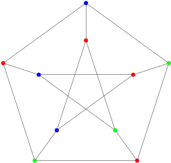

9.7 Viele Beispiele aus NP./course-TI-2/wly/09/07-NP-many-examples.wly:2:11
9.7 Viele Beispiele aus NP./course-TI-2/wly/09/07-NP-many-examples.wly:2:11
Problem 9.7.1./course-TI-2/wly/09/07-NP-many-examples.wly:4:5 ./course-TI-2/wly/09/07-NP-many-examples.wly:4:5 (./course-TI-2/wly/09/07-NP-many-examples.wly:5:93-Colorability./course-TI-2/wly/09/07-NP-many-examples.wly:5:11). Gegeben ein Graph ./course-TI-2/wly/09/07-NP-many-examples.wly:5:30$G= (V,E)$./course-TI-2/wly/09/07-NP-many-examples.wly:5:51,./course-TI-2/wly/09/07-NP-many-examples.wly:5:61 ./course-TI-2/wly/09/07-NP-many-examples.wly:5:61 gibt es eine Färbung ./course-TI-2/wly/09/07-NP-many-examples.wly:6:9$c : V \rightarrow \{1,2,3\}$./course-TI-2/wly/09/07-NP-many-examples.wly:6:30 ./course-TI-2/wly/09/07-NP-many-examples.wly:6:59 mit./course-TI-2/wly/09/07-NP-many-examples.wly:7:9

course-TI-2/public/img/09-complexity-theory/np-examples/peterson-3-colorable.svgWir müssen nun eine Zertifikatmaschine mit./course-TI-2/wly/09/07-NP-many-examples.wly:29:5 polynomieller Laufzeit angeben. Um uns nicht in./course-TI-2/wly/09/07-NP-many-examples.wly:30:5 technischen Details zu verlieren, werden wir einfach./course-TI-2/wly/09/07-NP-many-examples.wly:31:5 einen Algorithmus angeben, der zwei Inputs./course-TI-2/wly/09/07-NP-many-examples.wly:32:5 entgegennimmt: den Graphen ./course-TI-2/wly/09/07-NP-many-examples.wly:33:5$G$./course-TI-2/wly/09/07-NP-many-examples.wly:33:32 (im./course-TI-2/wly/09/07-NP-many-examples.wly:33:35 Turingmaschinenkontext also das Eingabewort ./course-TI-2/wly/09/07-NP-many-examples.wly:34:5$x$./course-TI-2/wly/09/07-NP-many-examples.wly:34:49)./course-TI-2/wly/09/07-NP-many-examples.wly:34:52 und./course-TI-2/wly/09/07-NP-many-examples.wly:34:52 ein ./course-TI-2/wly/09/07-NP-many-examples.wly:35:5Zertifikat./course-TI-2/wly/09/07-NP-many-examples.wly:35:10../course-TI-2/wly/09/07-NP-many-examples.wly:35:21 Hier ist unser Code:./course-TI-2/wly/09/07-NP-many-examples.wly:35:21
Beobachtung 9.7.2./course-TI-2/wly/09/07-NP-many-examples.wly:37:5 ./course-TI-2/wly/09/07-NP-many-examples.wly:37:5 ./course-TI-2/wly/09/07-NP-many-examples.wly:38:93-Colorability./course-TI-2/wly/09/07-NP-many-examples.wly:38:10 ist in NP../course-TI-2/wly/09/07-NP-many-examples.wly:38:29
Beweis Wir müssen nun eine Zertifikatmaschine mit./course-TI-2/wly/09/07-NP-many-examples.wly:59:9 polynomieller Laufzeit angeben. Um uns nicht in./course-TI-2/wly/09/07-NP-many-examples.wly:60:9 technischen Details zu verlieren, werden wir einfach./course-TI-2/wly/09/07-NP-many-examples.wly:61:9 einen Algorithmus angeben, der zwei Inputs./course-TI-2/wly/09/07-NP-many-examples.wly:62:9 entgegennimmt: den Graphen ./course-TI-2/wly/09/07-NP-many-examples.wly:63:9$G$./course-TI-2/wly/09/07-NP-many-examples.wly:63:36 (im./course-TI-2/wly/09/07-NP-many-examples.wly:63:39 Turingmaschinenkontext also das Eingabewort ./course-TI-2/wly/09/07-NP-many-examples.wly:64:9$x$./course-TI-2/wly/09/07-NP-many-examples.wly:64:53)./course-TI-2/wly/09/07-NP-many-examples.wly:64:56 und./course-TI-2/wly/09/07-NP-many-examples.wly:64:56 ein ./course-TI-2/wly/09/07-NP-many-examples.wly:65:9Zertifikat./course-TI-2/wly/09/07-NP-many-examples.wly:65:14../course-TI-2/wly/09/07-NP-many-examples.wly:65:25 Hier ist unser Code:./course-TI-2/wly/09/07-NP-many-examples.wly:65:25
def is_3_coloring(graph, c):./course-TI-2/wly/09/07-NP-many-examples.wly:68:9
(V,E) = graph./course-TI-2/wly/09/07-NP-many-examples.wly:69:9
for (u,v) in E:./course-TI-2/wly/09/07-NP-many-examples.wly:70:9
if c[u] == c[v]:./course-TI-2/wly/09/07-NP-many-examples.wly:71:9
return False./course-TI-2/wly/09/07-NP-many-examples.wly:72:9
if c[u] not in [1,2,3] or c[v] not in [1,2,3]:./course-TI-2/wly/09/07-NP-many-examples.wly:73:9
return False./course-TI-2/wly/09/07-NP-many-examples.wly:74:9
return True./course-TI-2/wly/09/07-NP-many-examples.wly:75:9
Falls nun
./course-TI-2/wly/09/07-NP-many-examples.wly:78:9$G$./course-TI-2/wly/09/07-NP-many-examples.wly:78:19
./course-TI-2/wly/09/07-NP-many-examples.wly:78:22$3$./course-TI-2/wly/09/07-NP-many-examples.wly:78:23-färbbar./course-TI-2/wly/09/07-NP-many-examples.wly:78:26
ist, wenn es also eine./course-TI-2/wly/09/07-NP-many-examples.wly:78:26
solche Färbung
./course-TI-2/wly/09/07-NP-many-examples.wly:79:9$c: V \rightarrow \{1,2,3\}$./course-TI-2/wly/09/07-NP-many-examples.wly:79:24
gibt,./course-TI-2/wly/09/07-NP-many-examples.wly:79:52
dann wird obiger Algorithmus
./course-TI-2/wly/09/07-NP-many-examples.wly:80:9is_3_coloring(graph,c)./course-TI-2/wly/09/07-NP-many-examples.wly:80:39
./course-TI-2/wly/09/07-NP-many-examples.wly:80:62
auch
./course-TI-2/wly/09/07-NP-many-examples.wly:81:9True./course-TI-2/wly/09/07-NP-many-examples.wly:81:15
ausgeben. Falls er für ein
./course-TI-2/wly/09/07-NP-many-examples.wly:81:20$c$./course-TI-2/wly/09/07-NP-many-examples.wly:81:48
./course-TI-2/wly/09/07-NP-many-examples.wly:81:51True./course-TI-2/wly/09/07-NP-many-examples.wly:81:53
./course-TI-2/wly/09/07-NP-many-examples.wly:81:58
ausgibt, dann ist
./course-TI-2/wly/09/07-NP-many-examples.wly:82:9$c$./course-TI-2/wly/09/07-NP-many-examples.wly:82:27
tatsächlich eine gültige./course-TI-2/wly/09/07-NP-many-examples.wly:82:30
3-Färbung und
./course-TI-2/wly/09/07-NP-many-examples.wly:83:9$G$./course-TI-2/wly/09/07-NP-many-examples.wly:83:23
ist
./course-TI-2/wly/09/07-NP-many-examples.wly:83:26$3$./course-TI-2/wly/09/07-NP-many-examples.wly:83:31
-färbbar../course-TI-2/wly/09/07-NP-many-examples.wly:83:34A\(\square\)
Das obige Beispiel verdeutlicht die Essenz der Klasse./course-TI-2/wly/09/07-NP-many-examples.wly:85:5 NP: es ist nicht klar, wie wir einen effizienten./course-TI-2/wly/09/07-NP-many-examples.wly:86:5 Algorithmus für ./course-TI-2/wly/09/07-NP-many-examples.wly:87:53-Colorability./course-TI-2/wly/09/07-NP-many-examples.wly:87:22schreiben können;./course-TI-2/wly/09/07-NP-many-examples.wly:87:41 aber ./course-TI-2/wly/09/07-NP-many-examples.wly:88:5überprüfen./course-TI-2/wly/09/07-NP-many-examples.wly:88:11,./course-TI-2/wly/09/07-NP-many-examples.wly:88:22 ob eine gegebene Färbung eine./course-TI-2/wly/09/07-NP-many-examples.wly:88:22 3-Färbung von ./course-TI-2/wly/09/07-NP-many-examples.wly:89:5$G$./course-TI-2/wly/09/07-NP-many-examples.wly:89:19 ist, das ist einfach../course-TI-2/wly/09/07-NP-many-examples.wly:89:22
Übungsaufgabe 9.7.1./course-TI-2/wly/09/07-NP-many-examples.wly:91:5
./course-TI-2/wly/09/07-NP-many-examples.wly:91:5
(./course-TI-2/wly/09/07-NP-many-examples.wly:93:9CNF-Satisfiability./course-TI-2/wly/09/07-NP-many-examples.wly:93:11). Gegeben eine Formel
./course-TI-2/wly/09/07-NP-many-examples.wly:93:34$F$./course-TI-2/wly/09/07-NP-many-examples.wly:93:57
./course-TI-2/wly/09/07-NP-many-examples.wly:93:60
in konjunktiver Normalform. Gibt es eine Belegung der./course-TI-2/wly/09/07-NP-many-examples.wly:94:9
Variablen, so dass
./course-TI-2/wly/09/07-NP-many-examples.wly:95:9$F$./course-TI-2/wly/09/07-NP-many-examples.wly:95:28
zu
./course-TI-2/wly/09/07-NP-many-examples.wly:95:31True./course-TI-2/wly/09/07-NP-many-examples.wly:95:36
wird?./course-TI-2/wly/09/07-NP-many-examples.wly:95:41
Auch hier können wir eine einfache Prüf-Funktion./course-TI-2/wly/09/07-NP-many-examples.wly:97:5
schreiben, die eine Formel
./course-TI-2/wly/09/07-NP-many-examples.wly:98:5$F$./course-TI-2/wly/09/07-NP-many-examples.wly:98:32
und eine Belegung./course-TI-2/wly/09/07-NP-many-examples.wly:98:35
./course-TI-2/wly/09/07-NP-many-examples.wly:99:5$\alpha$./course-TI-2/wly/09/07-NP-many-examples.wly:99:5
entgegennimmt, dann jede Klausel auswertet./course-TI-2/wly/09/07-NP-many-examples.wly:99:13
und schaut, ob immer
./course-TI-2/wly/09/07-NP-many-examples.wly:100:5True./course-TI-2/wly/09/07-NP-many-examples.wly:100:27
rauskommt. Somit gilt:./course-TI-2/wly/09/07-NP-many-examples.wly:100:32
auch./course-TI-2/wly/09/07-NP-many-examples.wly:101:5CNF-Satisfiability./course-TI-2/wly/09/07-NP-many-examples.wly:101:10
ist in NP../course-TI-2/wly/09/07-NP-many-examples.wly:101:33
Problem 9.7.3./course-TI-2/wly/09/07-NP-many-examples.wly:103:5 ./course-TI-2/wly/09/07-NP-many-examples.wly:103:5 (./course-TI-2/wly/09/07-NP-many-examples.wly:105:9Subset Sum./course-TI-2/wly/09/07-NP-many-examples.wly:105:11). Gegeben eine Liste./course-TI-2/wly/09/07-NP-many-examples.wly:105:26 ./course-TI-2/wly/09/07-NP-many-examples.wly:106:9$p_1, \dots, p_n \in \N$./course-TI-2/wly/09/07-NP-many-examples.wly:106:9 von "Preisen" und ein./course-TI-2/wly/09/07-NP-many-examples.wly:106:33 "Guthaben" ./course-TI-2/wly/09/07-NP-many-examples.wly:107:9$g \in \N$./course-TI-2/wly/09/07-NP-many-examples.wly:107:20,./course-TI-2/wly/09/07-NP-many-examples.wly:107:30 gibt es eine Menge./course-TI-2/wly/09/07-NP-many-examples.wly:107:30 ./course-TI-2/wly/09/07-NP-many-examples.wly:108:9$I \subseteq [n]$./course-TI-2/wly/09/07-NP-many-examples.wly:108:9 mit./course-TI-2/wly/09/07-NP-many-examples.wly:108:26
Dies ist ebenfalls in NP../course-TI-2/wly/09/07-NP-many-examples.wly:114:5
Sei ./course-TI-2/wly/09/07-NP-many-examples.wly:119:5$G = (V,E)$./course-TI-2/wly/09/07-NP-many-examples.wly:119:9 ein Graph. Eine Menge ./course-TI-2/wly/09/07-NP-many-examples.wly:119:20$I \subseteq V$./course-TI-2/wly/09/07-NP-many-examples.wly:119:43 ./course-TI-2/wly/09/07-NP-many-examples.wly:119:58 heißt ./course-TI-2/wly/09/07-NP-many-examples.wly:120:5unabhängig./course-TI-2/wly/09/07-NP-many-examples.wly:120:12,./course-TI-2/wly/09/07-NP-many-examples.wly:120:23 wenn es keine Kante./course-TI-2/wly/09/07-NP-many-examples.wly:120:23 ./course-TI-2/wly/09/07-NP-many-examples.wly:121:5$\{u,v\} \in E$./course-TI-2/wly/09/07-NP-many-examples.wly:121:5 gibt mit ./course-TI-2/wly/09/07-NP-many-examples.wly:121:20$u,v \in I$./course-TI-2/wly/09/07-NP-many-examples.wly:121:30../course-TI-2/wly/09/07-NP-many-examples.wly:121:41
Problem 9.7.4./course-TI-2/wly/09/07-NP-many-examples.wly:123:5 ./course-TI-2/wly/09/07-NP-many-examples.wly:123:5 Gegeben ein Graph ./course-TI-2/wly/09/07-NP-many-examples.wly:124:9$G=(V,E)$./course-TI-2/wly/09/07-NP-many-examples.wly:124:27 und eine Zahl ./course-TI-2/wly/09/07-NP-many-examples.wly:124:36$k$./course-TI-2/wly/09/07-NP-many-examples.wly:124:51 . Finde./course-TI-2/wly/09/07-NP-many-examples.wly:124:54 eine unabhängige Menge in ./course-TI-2/wly/09/07-NP-many-examples.wly:125:9$I$./course-TI-2/wly/09/07-NP-many-examples.wly:125:35 in ./course-TI-2/wly/09/07-NP-many-examples.wly:125:38$G$./course-TI-2/wly/09/07-NP-many-examples.wly:125:42 mit ./course-TI-2/wly/09/07-NP-many-examples.wly:125:45$|I| \geq k$./course-TI-2/wly/09/07-NP-many-examples.wly:125:50,./course-TI-2/wly/09/07-NP-many-examples.wly:125:62 ./course-TI-2/wly/09/07-NP-many-examples.wly:125:62 falls es eine solche gibt../course-TI-2/wly/09/07-NP-many-examples.wly:126:9
Ist dies in NP? Schon syntaktisch nicht! Es ist ja./course-TI-2/wly/09/07-NP-many-examples.wly:128:5 gar kein Entscheidungsproblem. Wir können aber eine./course-TI-2/wly/09/07-NP-many-examples.wly:129:5 Entscheidungsvariante definieren:./course-TI-2/wly/09/07-NP-many-examples.wly:130:5
Problem 9.7.5./course-TI-2/wly/09/07-NP-many-examples.wly:132:5 ./course-TI-2/wly/09/07-NP-many-examples.wly:132:5 (./course-TI-2/wly/09/07-NP-many-examples.wly:135:9Independent Set./course-TI-2/wly/09/07-NP-many-examples.wly:135:11) Gegeben ein Graph ./course-TI-2/wly/09/07-NP-many-examples.wly:135:31$G=(V,E)$./course-TI-2/wly/09/07-NP-many-examples.wly:135:51 ./course-TI-2/wly/09/07-NP-many-examples.wly:135:60 und eine Zahl ./course-TI-2/wly/09/07-NP-many-examples.wly:136:9$k$./course-TI-2/wly/09/07-NP-many-examples.wly:136:23../course-TI-2/wly/09/07-NP-many-examples.wly:136:26 Gibt es eine unabhängige Menge in./course-TI-2/wly/09/07-NP-many-examples.wly:136:26 ./course-TI-2/wly/09/07-NP-many-examples.wly:137:9$I$./course-TI-2/wly/09/07-NP-many-examples.wly:137:9 in ./course-TI-2/wly/09/07-NP-many-examples.wly:137:12$G$./course-TI-2/wly/09/07-NP-many-examples.wly:137:16 mit ./course-TI-2/wly/09/07-NP-many-examples.wly:137:19$|I| \geq k$./course-TI-2/wly/09/07-NP-many-examples.wly:137:24?./course-TI-2/wly/09/07-NP-many-examples.wly:137:36
Das Entscheidungsproblem ./course-TI-2/wly/09/07-NP-many-examples.wly:139:5Independent Set./course-TI-2/wly/09/07-NP-many-examples.wly:139:31ist./course-TI-2/wly/09/07-NP-many-examples.wly:139:51 offensichtlich in NP. Als Zertifikat kommt z.B../course-TI-2/wly/09/07-NP-many-examples.wly:140:5 einfach die Menge ./course-TI-2/wly/09/07-NP-many-examples.wly:141:5$I$./course-TI-2/wly/09/07-NP-many-examples.wly:141:23 in Frage. Für alle./course-TI-2/wly/09/07-NP-many-examples.wly:141:26 Entscheidungsprobleme, die wir oben als Beispiele./course-TI-2/wly/09/07-NP-many-examples.wly:142:5 aufgelistet haben, kann man ganz natürlich das./course-TI-2/wly/09/07-NP-many-examples.wly:143:5 zugehörige Suchproblem definieren: gegeben ein Graph,./course-TI-2/wly/09/07-NP-many-examples.wly:144:5 finde eine 3-Färbung (falls es sie gibt); gegeben eine./course-TI-2/wly/09/07-NP-many-examples.wly:145:5 CNF-Formel, finde eine erfüllende Belegung (falls es./course-TI-2/wly/09/07-NP-many-examples.wly:146:5 sie gibt); gegeben ein Instanz von ./course-TI-2/wly/09/07-NP-many-examples.wly:147:5Subset Sum./course-TI-2/wly/09/07-NP-many-examples.wly:147:41,./course-TI-2/wly/09/07-NP-many-examples.wly:147:56 finde eine Menge ./course-TI-2/wly/09/07-NP-many-examples.wly:148:5$I$./course-TI-2/wly/09/07-NP-many-examples.wly:148:22 mit ./course-TI-2/wly/09/07-NP-many-examples.wly:148:25$\sum_{i \in I} p_i = g$./course-TI-2/wly/09/07-NP-many-examples.wly:148:30../course-TI-2/wly/09/07-NP-many-examples.wly:148:54
Übungsaufgabe 9.7.2./course-TI-2/wly/09/07-NP-many-examples.wly:150:5 ./course-TI-2/wly/09/07-NP-many-examples.wly:150:5 Zeigen Sie für folgende Probleme, dass wir, falls wir./course-TI-2/wly/09/07-NP-many-examples.wly:151:9 einen effizienten Algorithmus dafür haben, dann auch./course-TI-2/wly/09/07-NP-many-examples.wly:152:9 einen effizienten Algorithmus schreiben können, der./course-TI-2/wly/09/07-NP-many-examples.wly:153:9 das entsprechende Objekt findet, falls es denn./course-TI-2/wly/09/07-NP-many-examples.wly:154:9 existiert!./course-TI-2/wly/09/07-NP-many-examples.wly:155:9
Subset Sum./course-TI-2/wly/09/07-NP-many-examples.wly:159:18 (das ist einfach),./course-TI-2/wly/09/07-NP-many-examples.wly:159:33
Independent Set./course-TI-2/wly/09/07-NP-many-examples.wly:162:18 (das ist auch recht einfach),./course-TI-2/wly/09/07-NP-many-examples.wly:162:38
CNF-Satisfiability./course-TI-2/wly/09/07-NP-many-examples.wly:165:18 (auch),./course-TI-2/wly/09/07-NP-many-examples.wly:165:41
3-Colorability./course-TI-2/wly/09/07-NP-many-examples.wly:168:18 (das ist trickreicher)../course-TI-2/wly/09/07-NP-many-examples.wly:168:37
Dies geht nicht immer! Erinnern Sie sich an./course-TI-2/wly/09/07-NP-many-examples.wly:170:5 ./course-TI-2/wly/09/07-NP-many-examples.wly:171:5Primes./course-TI-2/wly/09/07-NP-many-examples.wly:171:6. Der Agrawal–Kayal–Saxena-Algorithmus./course-TI-2/wly/09/07-NP-many-examples.wly:171:17 lässt uns entscheiden, ob eine gegebene Zahl ./course-TI-2/wly/09/07-NP-many-examples.wly:172:5$n$./course-TI-2/wly/09/07-NP-many-examples.wly:172:50 prim./course-TI-2/wly/09/07-NP-many-examples.wly:172:53 ist; also auch, ob ./course-TI-2/wly/09/07-NP-many-examples.wly:173:5$n$./course-TI-2/wly/09/07-NP-many-examples.wly:173:24 zusammengesetzt ist;./course-TI-2/wly/09/07-NP-many-examples.wly:173:27 allerdings geht daraus kein Algorithmus hervor, der./course-TI-2/wly/09/07-NP-many-examples.wly:174:5 einen Faktor auch findet. Wo wir gerade beim./course-TI-2/wly/09/07-NP-many-examples.wly:175:5 Faktorisieren sind: das Problem ./course-TI-2/wly/09/07-NP-many-examples.wly:176:5gegeben eine Zahl./course-TI-2/wly/09/07-NP-many-examples.wly:176:38 ./course-TI-2/wly/09/07-NP-many-examples.wly:177:5$X \in \N$./course-TI-2/wly/09/07-NP-many-examples.wly:177:5,./course-TI-2/wly/09/07-NP-many-examples.wly:177:15 zerlege sie in ihre Primfaktoren./course-TI-2/wly/09/07-NP-many-examples.wly:177:15 ist ja./course-TI-2/wly/09/07-NP-many-examples.wly:177:50 kein Entscheidungsproblem. Können wir ein./course-TI-2/wly/09/07-NP-many-examples.wly:178:5 "entsprechendes" Entscheidungsproblem formulieren? Es./course-TI-2/wly/09/07-NP-many-examples.wly:179:5 sollte gelten: wenn wir das Entscheidungsproblem lösen./course-TI-2/wly/09/07-NP-many-examples.wly:180:5 können, dann auch das Suchproblem. Wie wir gesehen./course-TI-2/wly/09/07-NP-many-examples.wly:181:5 haben, ist ./course-TI-2/wly/09/07-NP-many-examples.wly:182:5Primes./course-TI-2/wly/09/07-NP-many-examples.wly:182:17 bzw../course-TI-2/wly/09/07-NP-many-examples.wly:182:28NonPrimes./course-TI-2/wly/09/07-NP-many-examples.wly:182:34nicht das./course-TI-2/wly/09/07-NP-many-examples.wly:182:48 entsprechende Entscheidungsproblem, weil es uns nicht./course-TI-2/wly/09/07-NP-many-examples.wly:183:5 erlaubt, den Faktor auch zu finden../course-TI-2/wly/09/07-NP-many-examples.wly:184:5
Problem 9.7.6./course-TI-2/wly/09/07-NP-many-examples.wly:186:5 ./course-TI-2/wly/09/07-NP-many-examples.wly:186:5 (./course-TI-2/wly/09/07-NP-many-examples.wly:188:9Small Factor./course-TI-2/wly/09/07-NP-many-examples.wly:188:11) Gegeben eine Zahl ./course-TI-2/wly/09/07-NP-many-examples.wly:188:28$X \in \N$./course-TI-2/wly/09/07-NP-many-examples.wly:188:48,./course-TI-2/wly/09/07-NP-many-examples.wly:188:58 ./course-TI-2/wly/09/07-NP-many-examples.wly:188:58 binär codiert als ./course-TI-2/wly/09/07-NP-many-examples.wly:189:9$x \in \{0,1\}^n$./course-TI-2/wly/09/07-NP-many-examples.wly:189:27,./course-TI-2/wly/09/07-NP-many-examples.wly:189:44 und eine Zahl./course-TI-2/wly/09/07-NP-many-examples.wly:189:44 ./course-TI-2/wly/09/07-NP-many-examples.wly:190:9$K \in \N$./course-TI-2/wly/09/07-NP-many-examples.wly:190:9:./course-TI-2/wly/09/07-NP-many-examples.wly:190:19 gibt es einen echten Teiler ./course-TI-2/wly/09/07-NP-many-examples.wly:190:19$Z$./course-TI-2/wly/09/07-NP-many-examples.wly:190:49 von ./course-TI-2/wly/09/07-NP-many-examples.wly:190:52$\N$./course-TI-2/wly/09/07-NP-many-examples.wly:190:57 ./course-TI-2/wly/09/07-NP-many-examples.wly:190:61 mit ./course-TI-2/wly/09/07-NP-many-examples.wly:191:9$Z \leq K$./course-TI-2/wly/09/07-NP-many-examples.wly:191:13?./course-TI-2/wly/09/07-NP-many-examples.wly:191:23
Übungsaufgabe 9.7.3./course-TI-2/wly/09/07-NP-many-examples.wly:193:5 ./course-TI-2/wly/09/07-NP-many-examples.wly:193:5 Zeigen Sie: wenn man ./course-TI-2/wly/09/07-NP-many-examples.wly:195:9Small Factor./course-TI-2/wly/09/07-NP-many-examples.wly:195:31 effizient./course-TI-2/wly/09/07-NP-many-examples.wly:195:48 lösen kann, dann kann man auch die./course-TI-2/wly/09/07-NP-many-examples.wly:196:9 Primzahlfaktorisierung von ./course-TI-2/wly/09/07-NP-many-examples.wly:197:9$X$./course-TI-2/wly/09/07-NP-many-examples.wly:197:36 effizient finden../course-TI-2/wly/09/07-NP-many-examples.wly:197:39 ./course-TI-2/wly/09/07-NP-many-examples.wly:198:9Hinweis:./course-TI-2/wly/09/07-NP-many-examples.wly:198:10 ./course-TI-2/wly/09/07-NP-many-examples.wly:198:19Effizient./course-TI-2/wly/09/07-NP-many-examples.wly:198:21 heißt in diesem Zusammenhang./course-TI-2/wly/09/07-NP-many-examples.wly:198:31 ./course-TI-2/wly/09/07-NP-many-examples.wly:199:9polynomiell in der Anzahl der Bits../course-TI-2/wly/09/07-NP-many-examples.wly:199:10 Der Algorithmus./course-TI-2/wly/09/07-NP-many-examples.wly:199:46 ./course-TI-2/wly/09/07-NP-many-examples.wly:200:9probiere alle kleineren Zahlen aus./course-TI-2/wly/09/07-NP-many-examples.wly:200:10,./course-TI-2/wly/09/07-NP-many-examples.wly:200:45 ob sie ./course-TI-2/wly/09/07-NP-many-examples.wly:200:45$X$./course-TI-2/wly/09/07-NP-many-examples.wly:200:54 ./course-TI-2/wly/09/07-NP-many-examples.wly:200:57 teilen, ist ./course-TI-2/wly/09/07-NP-many-examples.wly:201:9nicht./course-TI-2/wly/09/07-NP-many-examples.wly:201:22 effizient!./course-TI-2/wly/09/07-NP-many-examples.wly:201:28
Das Entscheidungsproblem ./course-TI-2/wly/09/07-NP-many-examples.wly:203:5Small Factor./course-TI-2/wly/09/07-NP-many-examples.wly:203:31 ist./course-TI-2/wly/09/07-NP-many-examples.wly:203:48 offensichtlich in NP: das Zertifikat ./course-TI-2/wly/09/07-NP-many-examples.wly:204:5$z$./course-TI-2/wly/09/07-NP-many-examples.wly:204:42 ist jener./course-TI-2/wly/09/07-NP-many-examples.wly:204:45 Faktor (so er denn existiert), und die./course-TI-2/wly/09/07-NP-many-examples.wly:205:5 Zertifikatmaschine ./course-TI-2/wly/09/07-NP-many-examples.wly:206:5$M$./course-TI-2/wly/09/07-NP-many-examples.wly:206:24 muss nun ./course-TI-2/wly/09/07-NP-many-examples.wly:206:27$z$./course-TI-2/wly/09/07-NP-many-examples.wly:206:37 mit ./course-TI-2/wly/09/07-NP-many-examples.wly:206:40$K$./course-TI-2/wly/09/07-NP-many-examples.wly:206:45 ./course-TI-2/wly/09/07-NP-many-examples.wly:206:48 multiplizieren und schauen, ob auch ./course-TI-2/wly/09/07-NP-many-examples.wly:207:5$X$./course-TI-2/wly/09/07-NP-many-examples.wly:207:41 herauskommt../course-TI-2/wly/09/07-NP-many-examples.wly:207:44 Nicht so offensichtlich jedoch ist folgendes:./course-TI-2/wly/09/07-NP-many-examples.wly:208:5
Übungsaufgabe 9.7.4./course-TI-2/wly/09/07-NP-many-examples.wly:210:5 ./course-TI-2/wly/09/07-NP-many-examples.wly:210:5 Sei ./course-TI-2/wly/09/07-NP-many-examples.wly:211:9No Small Factor./course-TI-2/wly/09/07-NP-many-examples.wly:211:14 das Komplement von ./course-TI-2/wly/09/07-NP-many-examples.wly:211:34Small./course-TI-2/wly/09/07-NP-many-examples.wly:211:55 Factor./course-TI-2/wly/09/07-NP-many-examples.wly:212:9, also./course-TI-2/wly/09/07-NP-many-examples.wly:212:20
wobei ./course-TI-2/wly/09/07-NP-many-examples.wly:219:9$(x)_2$./course-TI-2/wly/09/07-NP-many-examples.wly:219:15 und ./course-TI-2/wly/09/07-NP-many-examples.wly:219:22$(k)_2$./course-TI-2/wly/09/07-NP-many-examples.wly:219:27 die von ./course-TI-2/wly/09/07-NP-many-examples.wly:219:34$x$./course-TI-2/wly/09/07-NP-many-examples.wly:219:43 und ./course-TI-2/wly/09/07-NP-many-examples.wly:219:46$k$./course-TI-2/wly/09/07-NP-many-examples.wly:219:51 ./course-TI-2/wly/09/07-NP-many-examples.wly:219:54 codierten natürlichen Zahlen sind../course-TI-2/wly/09/07-NP-many-examples.wly:220:9
Diese Übungsaufgabe ist quasi eine Warnung: was denn./course-TI-2/wly/09/07-NP-many-examples.wly:222:5 eine Zertifikatmaschine auf ihrem zweiten Band./course-TI-2/wly/09/07-NP-many-examples.wly:223:5 erwartet, das geht nicht immer aus der Problemstellung./course-TI-2/wly/09/07-NP-many-examples.wly:224:5 hervor!./course-TI-2/wly/09/07-NP-many-examples.wly:225:5